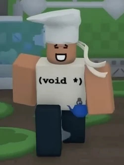
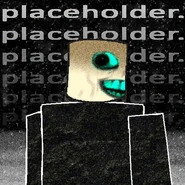

Torta
AVISO: ESSA HABILIDADE AINDA NÃO ESTA NO JOGO E PODE SOFRER ALTERAÇÔES OU ATE MESMO SER CANCELADA ATE A PROXIMA ATUALIZAÇÃO
A Torta é uma das 2 habilidades que ira vir ao jogo,Ela concede ao jogador um chapéu de chef com um largo sorriso.
Utilização:
Ao usar a habilidade, o usuário pegará uma torta, que exibirá uma seta vermelha para mirar e poderá ser carregada segurando o botão para aumentar a distância do arremesso. Assim que o usuário soltar a torta ou quando o tempo de carregamento terminar, ele a lançará em um arco com um pequeno raio de explosão ao atingir qualquer superfície ou jogador. Se arremessada contra o assassino, causará 10 de dano e o deixará mais lento, além de cobrir seus ícones de habilidade com geleia e deixar uma torta grudada em seu rosto como símbolo. Se arremessada contra um jogador, criará um círculo de defesa que reduzirá em 25% o dano recebido.
Para cada Assassino e Civil atingido pela explosão da torta, o usuário ganha 15 PontosToken e 8 PontosToken , respectivamente, recebendo uma mensagem dizendo "+15P por jogar uma torta no assassino" e "+8P por jogar uma torta em um companheiro de equipe".


Usando:
Audio não encontrado :(